Três amostras desenhadas em código para comparar resoluções nativas, não tamanhos da mesma imagem: o
martelo (metal e geometria) e a Pena de Fênix (curvas) em 32×32 e em 64×64, e o Morel aprovado (40×40, mostrado a 2×) ao
lado de uma versão de 80×80 (mostrada a 1×), com os recortes da ficha baixa e da cabeça e uma carta própria de 32×32.
Na rodada seguinte (no alto): a carta pequena do Morel refeita, perto da cabeça, e a espada dele refeita em todas as
artes; as versões anteriores continuam aqui, com "anterior" ou "antes" no rótulo.
Toda redução e ampliação é pixel a pixel, sem suavização. Os botões trocam a versão no mesmo lugar, em toda a página.
Itens:Morel:
A carta pequena do Morel: as quatro versões, em 32 px (tamanho real) e ampliadas
No jogo, na vez do herói (o Morel no lugar dele só neste teste): a ampliação do jogo (36 px) e o rosto inteiro (32 px)
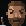
36 px (a carta inteira a 1,12×): ampliado 8× na captura, os pixels saem com 1 ou 2 de espessura
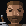
32 px (o rosto desfaz a ampliação, o resto da carta continua com o destaque): todos os pixels iguais
A carta do Morel companheiro (o tamanho que ele usa de verdade: 32 px, sem a ampliação do foco)
O conjunto novo: retrato grande, ficha baixa, cabeça e carta (80×80 e a carta de 32×32)
Ao lado de Odette, Yara e dos heróis, nos mesmos espaços
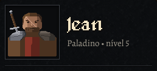
a ficha na capela, janela normal (80 px)
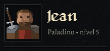
a ficha na capela, janela baixa (64 px: o recorte novo, com a espada inteira)
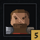
a cabeça no topo (48 px)
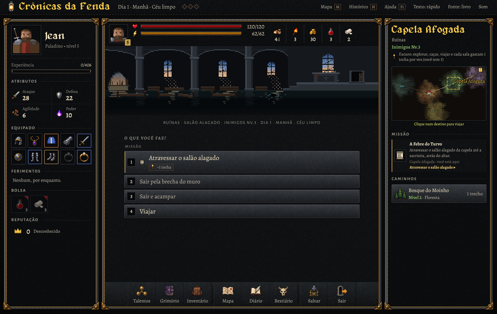
a capela inteira, com o 80×80 no lugar do retrato
Os itens escolhidos (32×32) ao lado da espada, do anel e do baú atuais, em tamanho real
Itens em espaços de 32 px, como na bolsa, ao lado dos ícones aprovados
Itens em espaços de 64 px, como numa apresentação maior
Ampliados, com os pixels à vista (os dois desenhos e o de 64 reduzido a 32 pelo navegador)
Morel nos espaços da ficha (80 px), da ficha baixa (64), da cabeça (48) e da carta (32; 36 na vez)
Os dois lado a lado (sem alternar)
Ampliados: o de 40×40 a 8× e o de 80×80 a 4× (o mesmo tamanho na tela)
No jogo: o mercado (a Pena de Fênix na bolsa e na prateleira; o martelo na mochila)
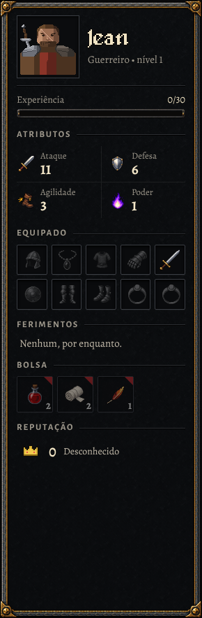
a ficha à esquerda, janela normal: a pena na bolsa (32 px), ao lado da poção e da bandagem aprovadas
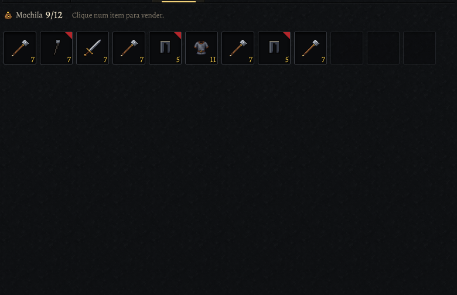
a mochila na aba Vender (32 px): os martelos ao lado da espada e da cota aprovadas
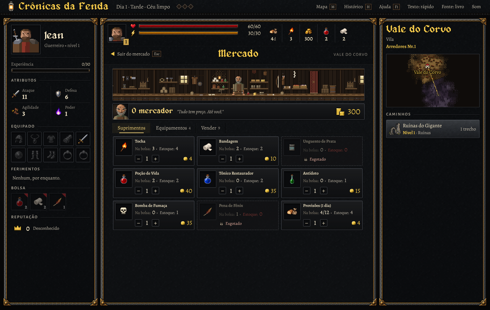
a tela inteira (1500×950), com a banca do mercador
No jogo: a capela e o mercado com o Morel no lugar do retrato (rodada anterior, com a espada antiga)
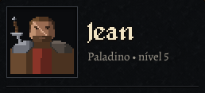
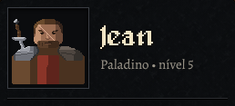
ficha, janela normal (80 px)
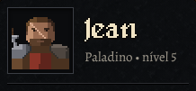
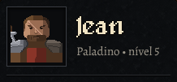
ficha, janela baixa (64 px)
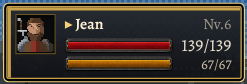
a carta na vez (36 px)
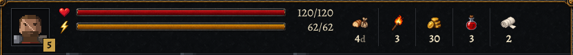
o topo (a cabeça, 48 px)
a capela inteira (1500×950)
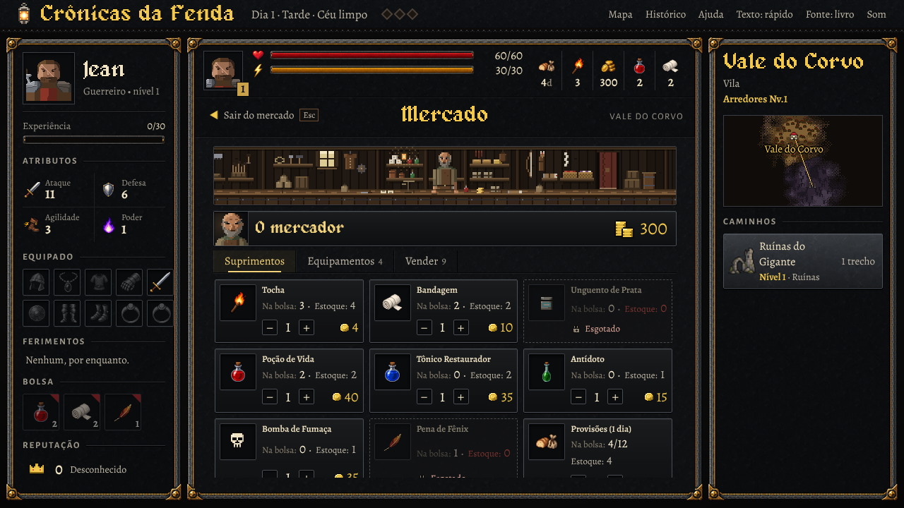
o mercado em janela baixa (1280×720); aqui a troca de itens e do Morel vem junta